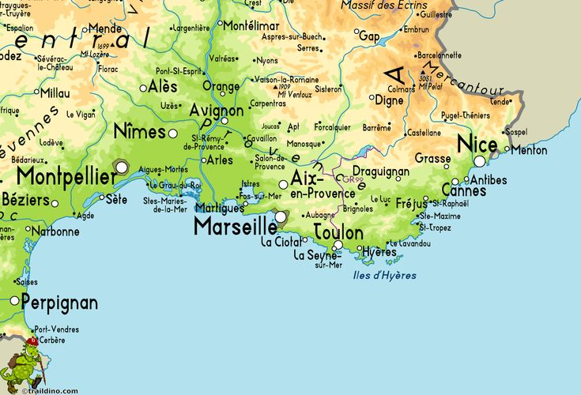

Traveling to The South of France
Picture yourself waking up in a seaside suite with panoramic ocean views, enjoying a complimentary breakfast made with fresh local ingredients, or unwinding at a spa after a day of exploration. Our special offers include discounted stays, family packages, and romantic getaways designed to fit every traveler’s dream. With these exciting deals, your adventure in the South of France becomes not only unforgettable but also surprisingly affordable.
In order to have a sucessful trip to the South of France, there are different available airports, hotels, and tourism options listed for you and yours.
To make your stay even more memorable, we’ve partnered with stunning hotels that combine luxury and comfort at exclusive rates.
List of Hotel Options
- Hôtel Martinez
- Hôtel Barrière
- Carlton Cannes
- Five Seas by Inwood Hotels
- Anantara Plaza Nice Hotel
List of Airport Options + Basic Information
- Nice Côte d'Azur Airport: International airport located 3.2 NM southwest of Nice, in the Alpes-Maritimes department of France
- Marseille Provence Airport:International airport located 27 kilometres northwest of Marseille, on the territory of Marignane, both communes of the Bouches-du-Rhône département in the Provence-Alpes-Côte d'Azur region of France
- Cannes–Mandelieu Airport or Aéroport de Cannes–Mandelieu:An airport that serves the city of Cannes. It is located 5 km west of Cannes and east of Mandelieu-la-Napoule, both communes of the Alpes-Maritimes département in the Provence-Alpes-Côte-d'Azur région of France.

Click the Picture Above to Read About Each City on the Map!!
Click Here to Return Home